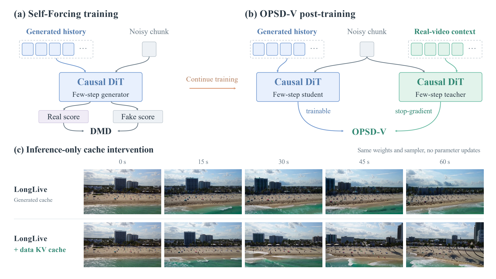
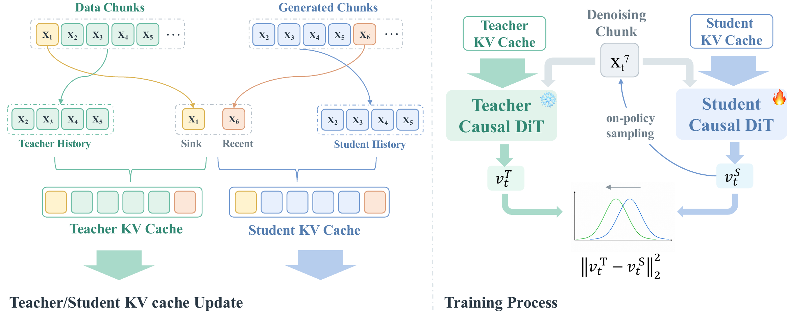

Student On-Policy Rollout
The student and teacher use the same real first chunk as an attention sink. The student then follows the original four-step sampler and writes its generated chunks into its own KV cache.
Anonymous submission · ICLR 2027
On-Policy Self-Distillation for Post-Training
Few-Step Autoregressive Video Generators
Cache-aware on-policy self-distillation with real long-video context.
Improved long-horizon generation with the original four-step sampler.
A 90-second overview of the motivation, method, and results.
01 / Qualitative results
Comparison of the base model, SFT, RL-based post-training with Astrolabe, and OPSD-V using the same prompt and seed.
Preview frames: 30 s. Playback starts at 0:00. Original videos · 832 × 480 · 16 FPS · four denoising steps.
02 / Motivation
To examine how cached history affects long-horizon generation, we provide real-video context to the original LongLive model at inference, before any OPSD-V post-training.

Experimental setup. Both rollouts initialize their KV caches with the same real-video first chunk. The baseline then builds its history from generated chunks. In the intervention, older cached history is replaced with KV features computed from the corresponding real-video chunks, while the latest model-generated chunk is retained for autoregressive continuation. Model parameters and the four-step sampler remain unchanged. The source video is shown as a reference.
Observation. The more stable rollout suggests that degradation in generated cache history contributes to long-horizon errors. This motivates using real-video context to construct cleaner teacher targets during OPSD-V training. At deployment, OPSD-V retains the original inference procedure without this real-video cache intervention.
03 / Method
OPSD-V is a cache-aware on-policy self-distillation framework for few-step autoregressive video generators. Real long videos provide privileged temporal context for an exponential-moving-average (EMA) teacher that provides velocity targets at the student’s own noisy rollout states.

The student and teacher use the same real first chunk as an attention sink. The student then follows the original four-step sampler and writes its generated chunks into its own KV cache.
The teacher evaluates the same student noisy states using older real-video history. Its latest cache chunk is its own clean estimate from the preceding chunk’s final student noisy state.
Velocity matching supervises all four denoising steps from chunk 8 onward. Per-step backward limits memory use during long-rollout training.
At inference, the teacher is removed; the original four-step sampler and inference-time KV-cache mechanism remain unchanged.
04 / Evaluation
OPSD-V improves Quality and Dynamic Degree on both backbones. Semantic scores decrease slightly on LongLive and increase slightly on Self-Forcing relative to their base models.
Red: best. Blue: second-best, within each backbone. ↑ Higher is better.
Results average MovieGenBench and MeiBench equally, using 120 prompts from each benchmark and one video per prompt. Videos are approximately one minute long, generated at 16 FPS with four denoising steps.
Quality (6) averages subject consistency, background consistency, aesthetic quality, imaging quality, motion smoothness, and dynamic degree. Semantic (6) averages object class, multiple objects, color, scene, appearance style, and overall consistency. These are unweighted means of raw dimension scores. Dynamic Degree uses 5-second windows and is also reported separately.
OPSD-V compared with its corresponding base model.
Ten participants each compare 20 paired videos: 10 LongLive pairs and 10 Self-Forcing pairs. Each pair is shown with its prompt. Participants choose Model A, Model B, or Same for overall preference, motion quality, and visual quality. Percentages above include ties.
05 / Ablation results
We evaluate three components of OPSD-V on LongLive: the prediction space, the supervised denoising steps, and the teacher-cache update. All variants retain the original four-step inference procedure.
Each comparison shows the first 30 seconds with the same prompt and seed across all four variants. Preview frames are at 15 s; playback starts at 0:00.
Replacing velocity matching with clean-latent (x₀) matching reduces Quality and Dynamic Degree.
Supervising only the first denoising step leaves the remaining three steps without direct supervision.
Using the student’s latest chunk in the teacher cache yields weaker local detail than the teacher’s own clean estimate.
Red: best. Blue: second-best, within each backbone. ↑ Higher is better. Scores are averaged equally over the two benchmarks.
06 / Additional results
Further comparisons of the base model, SFT, Astrolabe, and OPSD-V. Preview frames are at 30 s; playback starts at 0:00.
07 / Further baseline comparison
We compare Self Gradient Forcing (SGF, chunkwise EMA) with Self-Forcing + OPSD-V on the same prompts. Our results use seed 1. The selected examples highlight visual quality, motion dynamics, or both.